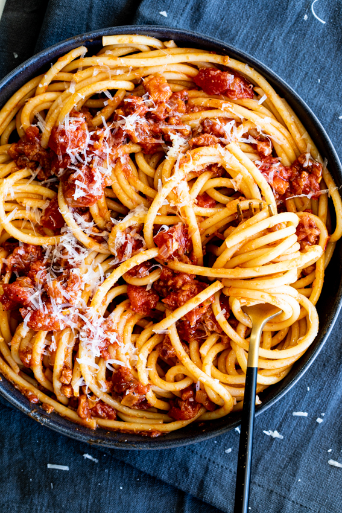

Bucatini alla amatriciana

Roman-Style Rigatoni Alla Gricia Recipe
How to make rigatoni like a real Italian
Ingredients:
- 3 tablespoons olive oil
- Guanciale
- 1½ pounds canned tomatoes, preferably imported Italian
- 1 pound dried bucatini or perciatelli
- Salt and freshly ground black pepper
- 1½ cup freshly grated pecorino, romano or Parmesan cheese
Steps:
- Step 1 Cut the guanciale into chunks less than one-half inch thick. Place in a saucepan with the olive oil and fry over low heat for 15 minutes, until all the fat has been rendered out and the meat is very crisp. Remove the meat from the pan with a slotted spoon and set aside.
- Step 2 Drain the tomatoes, finely chop them and add to the onion in the pan. Season with red-pepper flakes and salt and pepper to taste and simmer 20 minutes, stirring occasionally.
- Step 3 Meanwhile, bring a large pot of cold water to a boil and add salt to taste. Add the pasta and cook until al dente, about 9 to 12 minutes, depending on the brand. Drain well.
- Step 4Transfer the cooked sauce to a large heavy skillet over medium-high heat. Add the pasta and the reserved meat and cook, stirring, for 30 seconds. Remove the skillet from the heat, add the cheese and mix very well. Transfer the pasta to a warm platter and serve immediately.